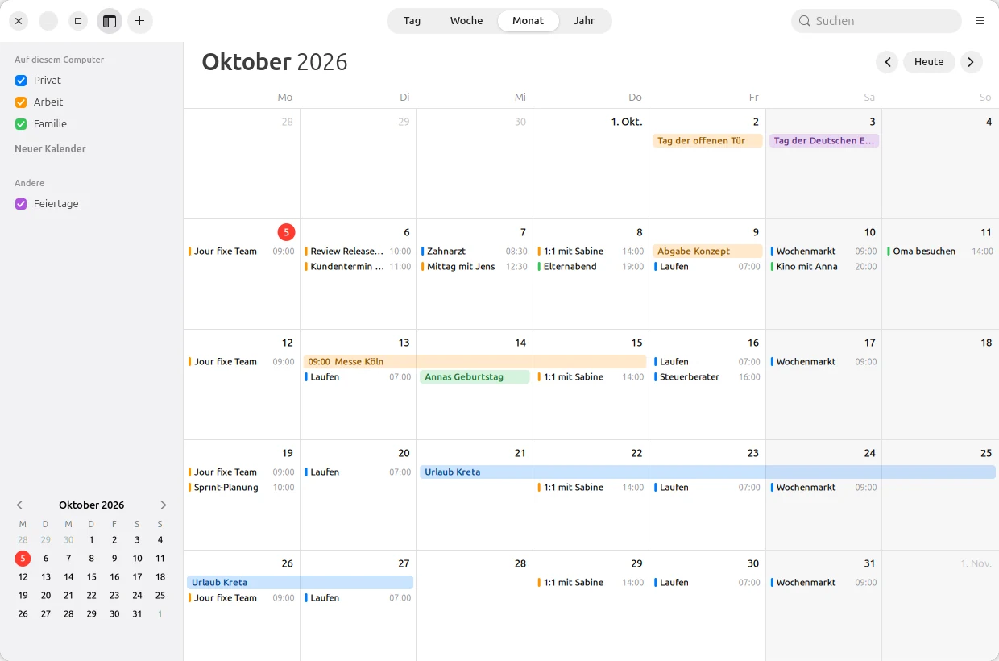
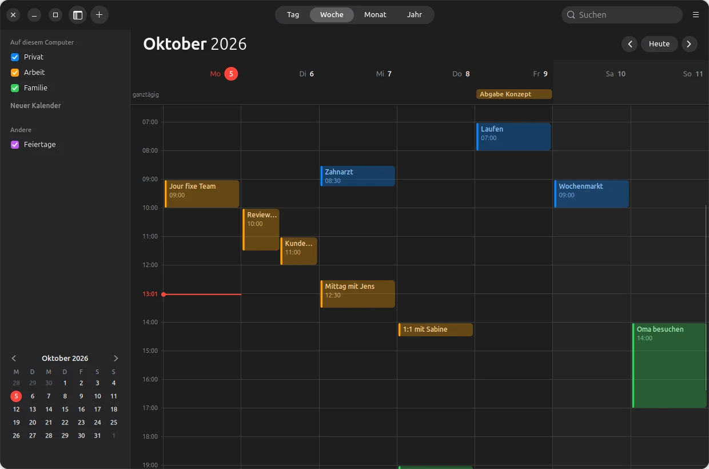
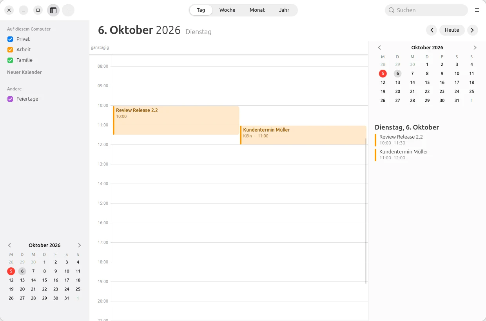
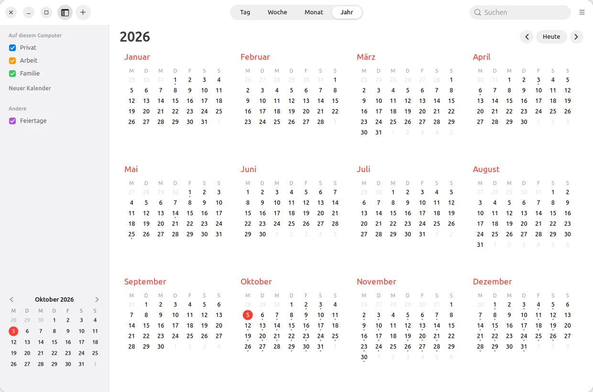
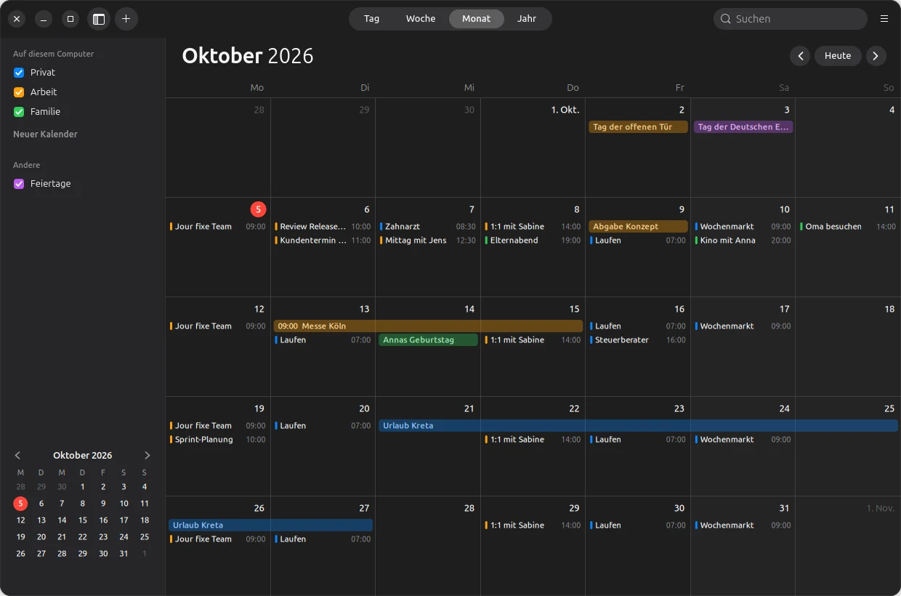
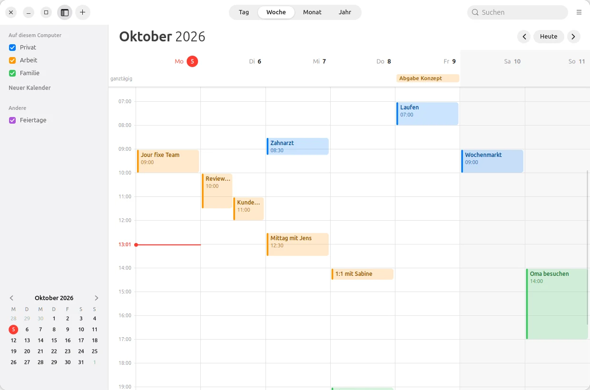

Your day.
At a glance.
LiCal is a calendar with the look and feel of Apple’s Calendar –
on Ubuntu like on the Mac, on Android like on the iPhone. No account, no forced cloud.

Views
Day. Week. Month. Year.
With the red line for “now”, all-day events at the top, overlapping events side by side – light or dark.




Events
Just
write it down.
“Mittag mit Jens morgen 12:30” – LiCal understands date, time and duration from a single sentence (in German for now). Double-click in the calendar to create, drag to move, the info window has everything else.
- Repeats like Apple’s – daily to yearly, with exceptions.
- Alerts before the event, also for all-day events; on the computer even when LiCal is closed.
- Absences with a stand-in, for teams.
- Share by QR code – one event from device to device, without a server.

Features
And so much more.
Holidays
Public holidays for each German state, as a calendar of their own you can show or hide.
Time zones
Create events in another time zone – LiCal does the maths correctly, even across daylight saving changes.
Printing
Month, week or day as a clean sheet – on the computer straight from LiCal.
Widgets
On the Android home screen: the date, “Up next”, the month or a list – like on the iPhone.
The phone’s calendars
On Android, LiCal also reads and writes the calendars already on the device – synced with DAVx⁵, for example.
As your default
Calendar invitations (.ics) and “Add event” from other apps open in LiCal – on Ubuntu and Android.
Coming next: team sync – end-to-end encrypted, directly between devices, with your own server only as a fallback.
Privacy
Your events
belong to you.
Privacy comes first at LiCal: events stay on your device. Only what you share yourself is passed on – and only for as long as you want.
Download
Get started. For free.
Version 0.1 beta – for Ubuntu 24.04 and later and Android 10 and later.
Ubuntu
Unpack and run linux/install.sh – LiCal appears in the applications menu, its icon shows today’s date.
Android
Download and install. LiCal asks for the device’s calendar and for notifications for alerts.
App signature
SHA-256: b53ba4b14abd79e1d31be87858fc0e9a59f13baef9a8531a01cefaddf93ebed9
Source code
Every line open to inspect. Bugs or ideas are welcome in the issue tracker.
Developed by Olaf Winkler in Schleswig-Holstein.
Checksums: SHA256SUMS · Beta, because LiCal has only been tested on a few devices so far. The pictures show made-up sample events.